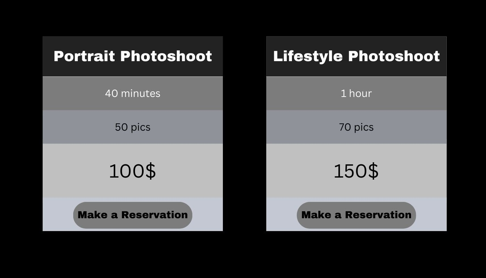
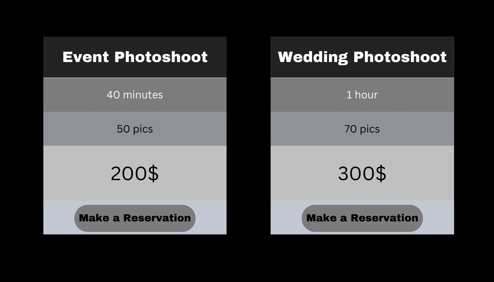

◀
▶

Sofia is a freelance photographer. Photography has always been her pasion.
During her photoshoots she tries to tell the story of the model and she wanted her website to tell her story the way she tells the story of her clients.
As the story of photography starts from black and white photos this design was choosen for Sofia's portfolio website.
Aa Bb Cc Dd Ee Ff Gg Hh Ii
Jj Kk Ll Mm Nn Oo Pp Qq
Rr Ss Tt Uu Vv Ww Xx
Yy Zz
Aa Bb Cc Dd Ee Ff Gg Hh
Ii Jj Kk Ll Mm Nn Oo Pp
Qq Rr Ss Tt Uu Vv Ww
Xx Yy Zz
#E5E4E2
R:229 G:228 B:226
C:0 M:0 Y:1 K:10
#242124
R:255 G:240 B:245
C:0 M:8 Y:0 K:86
#050203
R:5 G:2 B:3
C:75 M:68 Y:67 K:90
#FFFAFA
R:255 G:250 B:250
C:0 M:10 Y:29 K:0